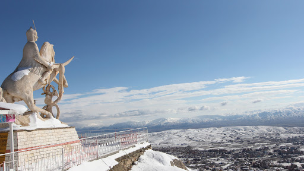
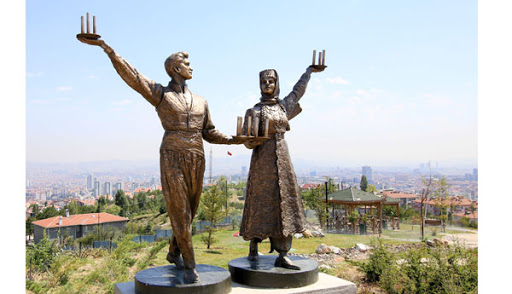
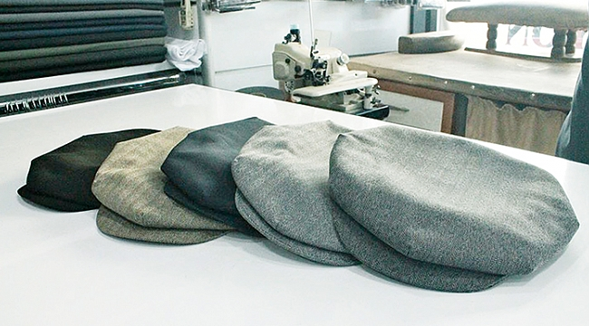
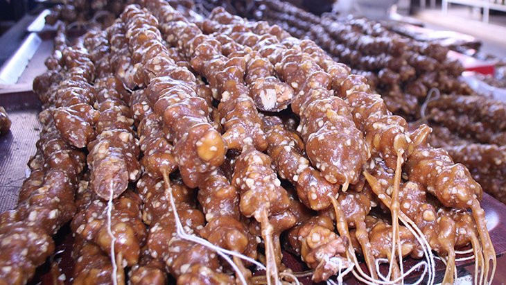
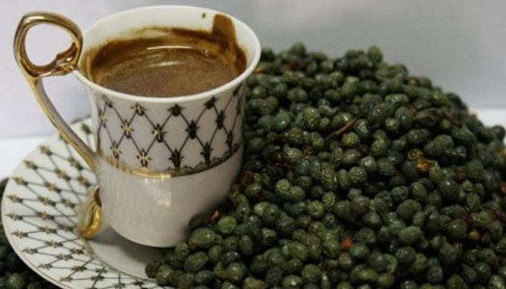

ELAZIĞ'IN KISACA TARİHİ
M.Ö. 2000 yılına dayanan Elazığ'ın tarihi Harput ile başlamaktadır.İlk olarak Harput'a...
Devamını Oku

GAKGOŞ
Gakgoş kelimessinin Elazığ'da bilinen hali aslen garındaştan gelen ancak zamanla söyleniş ve hitap şeklinin...
Devamını Oku

ÇAYDA ÇIRA
Çayda Çıra, Elâzığ yöresine ait halay türünden halk oyunudur. Dünyada "Mumlu Dans" olarak da bilinir. Genellikle...
Devamını Oku

SEKİZ KÖŞELİ KASKET
Geleneksel giyimde başa vurulan şapkanın adı Sekiz Köşe'dir. Elazığ'a özgü sekiz köşe şapkanın...
Devamını Oku

ORCİK
Elazığ'ın yöresel lezzetleri arasında yer alan "orcik" (cevizli sucuk), köylülerin günler süren emeğiyle geleneksel...
Devamını Oku

ÇEDENE KAHVESİ
Kahve her tarafta bilinir,içilir ama Elazığ'da bu bambaşkadır.Elazığ ve civarında yetişen...
Devamını Oku